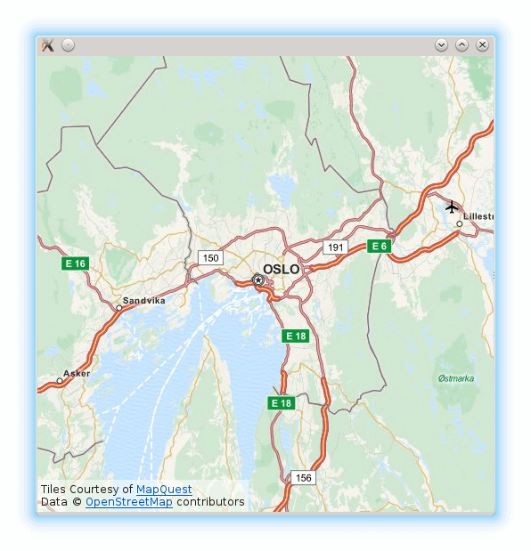

Minimal Map (QML)

Minimal Map demonstrates how to use the Map item to render a map. It shows the minimum amount of code needed to display the map, and can be used as a basis for further experimentation.
Running the Example
To run the example from Qt Creator, open the Welcome mode and select the example from Examples. For more information, visit Building and Running an Example.
C++ Code
In main.cpp we use only the QGuiApplication and QQmlApplicationEngine classes.
#include <QGuiApplication> #include <QQmlApplicationEngine>
In the main function, we first instantiate a QGuiApplication object. Then we create a QQmlApplicationEngine and tell it to load main.qml from the Qt Resource System.
Finally, QGuiApplication::exec() launches the main event loop.
int main(int argc, char *argv[]) { QGuiApplication app(argc, argv); QQmlApplicationEngine engine; engine.load(QUrl(QStringLiteral("qrc:/main.qml"))); return app.exec(); }
QML Code
In main.qml, we import the QtLocation QML module and its depending QtPositioning QML module. Next, we create the top level window, set a sensible default size, and make it visible. The window will be filled by a Map item showing the map.
import QtQuick 2.0 import QtQuick.Window 2.0 import QtLocation 5.6 import QtPositioning 5.6 Window { width: 512 height: 512 visible: true Plugin { id: osmPlugin name: "osm" // specify plugin parameters if necessary // PluginParameter { // name: // value: // } } Map { anchors.fill: parent plugin: osmPlugin center: QtPositioning.coordinate(59.91, 10.75) // Oslo zoomLevel: 10 } }
The Plugin item is necessary to define the map provider we are going to use. The example can work with any of the available geo services plugins. However, some plugins may require additional plugin parameters in order to function correctly and we can use PluginParameter to specify them. In this example, we use the osm plugin, which is a Qt Location Open Street Map Plugin and does not require any parameters.
In the Map item, we refer to the plugin we use and we set the center and the zoomLevel of the map.
Requirements
The example requires a working internet connection to download OpenStreetMap map tiles. An optional system proxy should be picked up automatically.
Files: